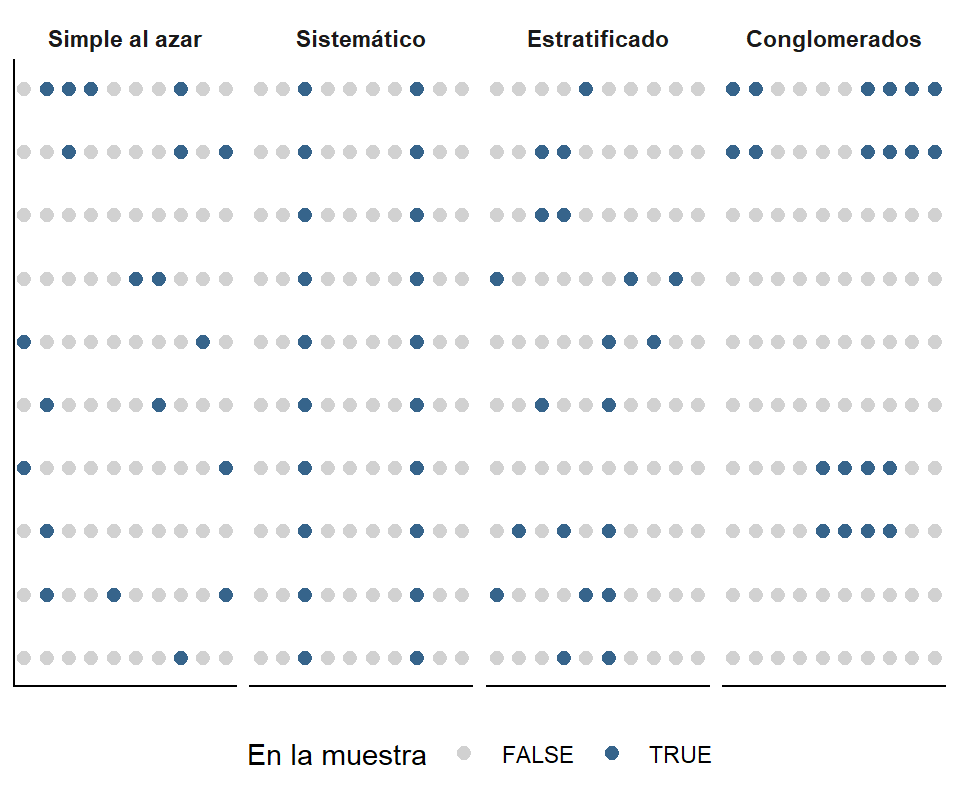
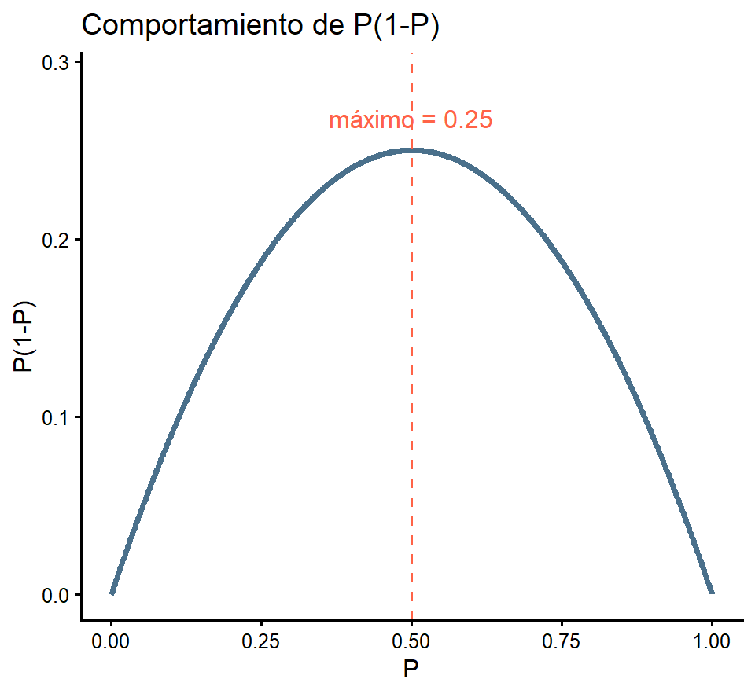
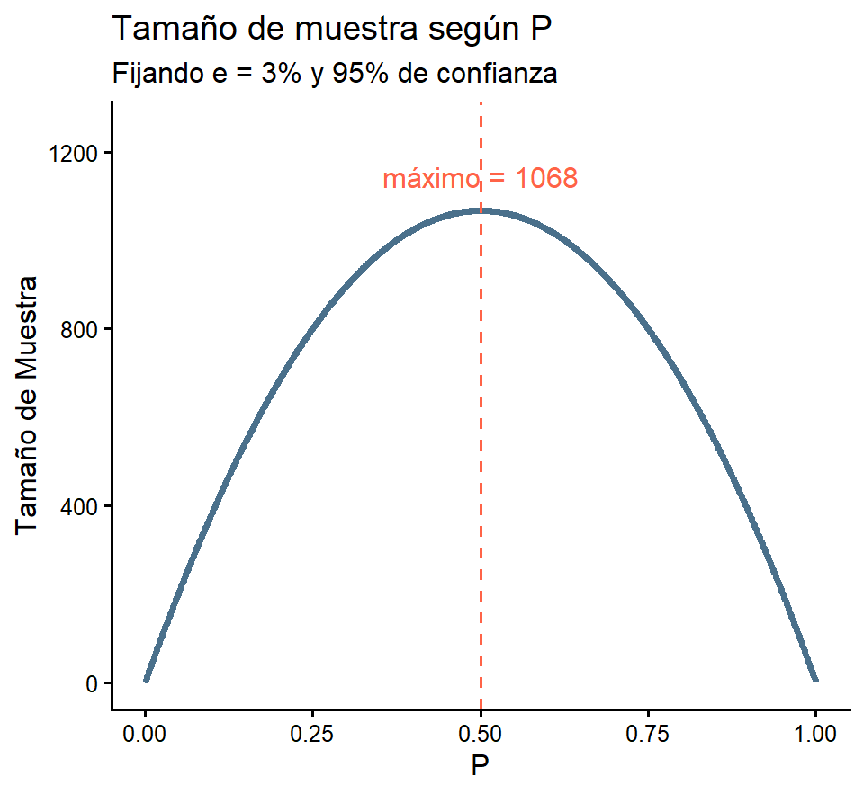

id grado gasto
1 1 Bachillerato 7495
2 2 Bachillerato 11099
3 3 Bachillerato 12174
4 4 Bachillerato 8194
5 5 Bachillerato 13759
6 6 Bachillerato 16114media_poblacional desv
12600.773 4203.754 [XS-1130 Principios de Inferencia]
De la primera parte ya sabemos que:
Un diseño es probabilístico si toda unidad tiene probabilidad \(\pi_k\) conocida y positiva de ser seleccionada.
El estimador \(\bar{y}_s\) es una variable aleatoria con su propia distribución muestral, esperanza y varianza.
Bajo muestreo aleatorio simple sin reemplazo:
\[E(\bar{y}_s) = \bar{Y} \qquad \operatorname{Var}(\bar{y}_s) = \frac{S^2}{n}\left(1-\frac{n}{N}\right)\]
Importante
Lo que veremos ahora: cada diseño muestral tiene su propio estimador y su propia fórmula de varianza. Usar la fórmula equivocada no cambia la estimación puntual, pero sí cambia el error estándar que se reporta, y con él todas las conclusiones.
Procedimiento general
Definir la población objetivo y la unidad de estudio.
Construir o conseguir el marco muestral.
Elegir el diseño muestral (simple, sistemático, estratificado, conglomerados o una combinación).
Determinar el tamaño de muestra, a partir del error permisible y la confianza deseada.
Seleccionar la muestra con un mecanismo aleatorio, documentando la semilla.
Recolectar la información y controlar la no respuesta.
Estimar los parámetros usando los pesos del diseño y reportar el error estándar.
El marco muestral es el listado o mapa que representa a todos los miembros de la población. Para que el diseño funcione debe cumplir:
Debe contener todos los elementos de la población en estudio.
Cada unidad de estudio debe estar representada una sola vez.
Cada unidad debe estar representada de forma individual, no en grupos o conglomerados.
No debe contener elementos que no pertenezcan a la población.
Nota
En la práctica el listado casi nunca es perfecto y difiere un poco de la población meta teórica. Por eso conviene documentar sus limitaciones desde el inicio: el marco define, en los hechos, sobre cuál población se puede concluir.

En los cuatro casos \(n = 20\) de \(N = 100\), o sea \(\pi_k = 0.2\). Lo que cambia es cuáles combinaciones de unidades son posibles, y eso modifica la precisión.
Definición formal
Un diseño es de muestreo simple al azar sin reemplazo (MSA) de tamaño \(n\) si todas las muestras posibles de tamaño \(n\) tienen la misma probabilidad de ser seleccionadas:
\[p(s) = \frac{1}{\binom{N}{n}} \qquad \text{para cada una de las } \binom{N}{n} \text{ muestras}\]
Importante
La definición formal es más exigente que la frase inicial: que todos los elementos sean equiprobables no garantiza que todas las muestras lo sean. El muestreo sistemático cumple lo primero, pero no lo segundo.
¿Por qué \(\pi_k = n/N\)?
Para contar las muestras que contienen a la unidad \(k\): la fijamos y elegimos las \(n-1\) restantes entre las \(N-1\) disponibles, es decir \(\binom{N-1}{n-1}\) formas. Entonces:
\[\pi_k = \frac{\binom{N-1}{n-1}}{\binom{N}{n}} = \frac{(N-1)!\;\;n!}{N!\;\;(n-1)!} = \frac{n}{N}\]
Como \(\pi_k\) es igual para todas las unidades, el peso de muestreo es constante:
\[w_k = \frac{1}{\pi_k} = \frac{N}{n}\]
Cada unidad de la muestra “representa” a \(N/n\) unidades de la población.
Media, total y proporción
\[\underbrace{\bar{y}_s = \frac{1}{n}\sum_{k \in s} y_k}_{\text{media}} \qquad \underbrace{\hat{p} = \frac{a}{n}}_{\text{proporción}}\]
donde \(a\) es el número de unidades de la muestra que poseen el atributo.
Los tres son insesgados: \(E(\bar{y}_s) = \bar{Y}\) y \(E(\hat{p}) = P\).
Nota
La proporción es un caso particular de la media: basta definir \(y_k = 1\) si la unidad tiene el atributo y \(y_k = 0\) si no lo tiene.
\[\widehat{\operatorname{Var}}(\bar{y}_s) = \frac{s^2}{n}\left(1-\frac{n}{N}\right) \qquad \widehat{\operatorname{Var}}(\hat{p}) = \frac{\hat{p}\,\hat{q}}{n-1}\left(1-\frac{n}{N}\right)\]
Importante
El error estándar es la raíz de estas cantidades: \(ee(\bar{y}_s) = \sqrt{\widehat{\operatorname{Var}}(\bar{y}_s)}\). Es lo que se reporta junto con la estimación.
Pasos
Definir la población e identificar su tamaño \(N\).
Asignar un número único a cada elemento del marco, de \(1\) a \(N\).
Seleccionar \(n\) números aleatorios entre \(1\) y \(N\), mediante tablas de números aleatorios, un generador de computadora o un sorteo manual.
Las unidades que llevan esos números constituyen la muestra.
Documentar la semilla para que el proceso sea reproducible.
Importante
Los números se generan antes de mirar los datos, y no se sustituye ninguna unidad porque sea difícil de localizar: sustituirla rompe la equiprobabilidad e introduce sesgo de selección.
Trabajaremos con una población de 134 399 personas graduadas, clasificadas por grado académico y estudiaremos su gasto en transporte mensual:
Cargue los datos y obtenga los valores parámetros poblacionales (Media Poblacional y Desviación Población):
id grado gasto
1 1 Bachillerato 7495
2 2 Bachillerato 11099
3 3 Bachillerato 12174
4 4 Bachillerato 8194
5 5 Bachillerato 13759
6 6 Bachillerato 16114media_poblacional desv
12600.773 4203.754 Ahora seleccionemos 749 individuos en un muestreo simple al azar sin reemplazo.
[1] 36473 18726 1647 45343 88920 131151 1134 22508 69558 77694
[11] 74717 39436 29284 94381 19305 41453 123625 134080 78718 58693
[21] 56221 58982 79661 89969 11860 105317 38691 21096 3381 51041
[31] 74156 3987 30305 42098 276 98844 22050 4897 41801 3180
[41] 113964 1763 98658 7394 29386 6459 116917 102950 106805 9378 id grado gasto
36473 36473 Bachillerato 11133
18726 18726 Bachillerato 10304
1647 1647 Bachillerato 17632
45343 45343 Bachillerato 11350
88920 88920 Diplomado 10915
131151 131151 Maestría 10987Estimemos la media muestral y obtengamos su error estándar:
\[\small \widehat{\operatorname{Var}}(\bar{y}_s) = \frac{s^2}{n}\left(1-\frac{n}{N}\right) \qquad ee(\bar{y}_s) = \sqrt{\widehat{\operatorname{Var}}(\bar{y}_s)}\]
media_muestral error_estandar
12537.81 143.82 Más adelante veremos que podemos acotar el parámetro entre dos valores, para el caso particular de la media poblacional \(\mu\) tenemos que: \(\text{Si } n\to\infty\) entonces con 95% de confianza:\[\small \mu \in \left[ \bar{y}_s - 1.96\cdot ee_{(\bar{y}_s)} \quad , \bar{y}_s + 1.96\cdot ee_{(\bar{y}_s)} \right]\]
Bachillerato Diplomado Doctorado Especialidad Licenciatura Maestría
367 122 1 12 177 56
Profesorado
14
Bachillerato Diplomado Doctorado Especialidad Licenciatura Maestría
335.9 160.1 1.7 11.9 172.8 51.8
Profesorado
14.7 Importante
El MSA reproduce en promedio la composición de la población, pero en una muestra concreta los grupos pequeños quedan al azar. Con \(N_{\text{Doctorado}} = 306\) de 134 399, lo esperado son 2 doctorados: podrían salir 0, 1 o 5.
Si el estudio necesita resultados por grado académico, el MSA no sirve: hay que estratificar.
Ventajas
Simplicidad: es el método más fácil de entender y aplicar, y todas las fórmulas tienen forma cerrada.
No sesgado: todos los elementos tienen la misma probabilidad de ser seleccionados.
Representatividad: da una buena representación de la población si la muestra es suficientemente grande.
Base para otros métodos: es el punto de partida de todos los diseños más complejos.
Desventajas
No garantiza equilibrio: si la población es muy heterogénea, una muestra puede no capturar todas sus características.
Poco práctico: con poblaciones muy grandes el proceso de selección y de recolección resulta costoso y lento.
Requiere lista completa de todos los miembros de la población.
Las unidades quedan dispersas geográficamente, lo que encarece el trabajo de campo.
Se parte del error de muestreo permisible \(e\): la diferencia máxima que estamos dispuestos a tolerar entre la estimación y el parámetro, con una confianza \(1-\alpha\).
\[e = z_{1-\alpha/2}\;\frac{\sigma}{\sqrt{n}} \quad \Longrightarrow \quad \sqrt{n} = \frac{z_{1-\alpha/2}\,\sigma}{e} \quad \Longrightarrow \quad \boxed{\;n_0 = \left(\frac{z_{1-\alpha/2}\,\sigma}{e}\right)^2\;}\]
Cuatro elementos a decidir
| Confianza \((1-\alpha)\) | Significancia \((\alpha)\) | \(z_{1-\alpha/2}\) |
|---|---|---|
| 0.90 | 0.10 | 1.645 |
| 0.91 | 0.09 | 1.695 |
| 0.92 | 0.08 | 1.751 |
| 0.93 | 0.07 | 1.812 |
| 0.94 | 0.06 | 1.881 |
| 0.95 | 0.05 | 1.960 |
| 0.96 | 0.04 | 2.054 |
| 0.97 | 0.03 | 2.170 |
| 0.98 | 0.02 | 2.326 |
| 0.99 | 0.01 | 2.576 |
Población infinita o muy grande
\[n_0 = \frac{z^2_{1-\alpha/2}\;\sigma^2}{e^2}\]
Población finita (corrección)
\[n = \frac{n_0}{1 + \dfrac{n_0}{N}}\]
Importante
Siempre se redondea hacia arriba: un tamaño menor no alcanza la precisión pedida.
La corrección por población finita siempre reduce el tamaño requerido.
Ejemplo. Se desea estimar el gasto mensual promedio en transporte de las 134 399 personas graduadas. Un estudio piloto arrojó una desviación estándar de ₡4 200. Se quiere un error máximo de ₡300 con una confianza del 95%.
Solución a mano:
\[n_0 = \left(\frac{1.96 \times 4200}{300}\right)^2 = (27.44)^2 = 752.93 \quad \Longrightarrow \quad n_0 = 753\]
\[n = \frac{752.93}{1 + \dfrac{752.93}{134\,399}} = \frac{752.93}{1.005602} = 748.7 \quad \Longrightarrow \quad n = 749\]
Como la proporción es una media de ceros y unos, con \(\sigma^2 = P\,Q\):
Fórmulas
\[n_0 = \frac{z^2_{1-\alpha/2}\;P\,Q}{e^2} \qquad \qquad n = \frac{n_0}{1 + \dfrac{n_0}{N}}\]
con \(Q = 1 - P\).
Importante
¿Y si no conocemos \(P\)? El producto \(PQ = P(1-P)\) alcanza su máximo en \(P = 0.5\), donde \(PQ\)vale \(0.25\). Tomar \(P = 0.5\) da el tamaño más conservador: garantiza el error deseado sea cual sea el verdadero valor de \(P\).
Derivando: \(\frac{d}{dP}\left[P - P^2\right] = 1 - 2P = 0 \Rightarrow P = 0.5\), con segunda derivada \(-2 < 0\).


Las dos curvas son la misma función reescalada: \(n_0\) es \(P(1-P)\) multiplicado por la constante \(z^2/e^2\). Por eso el tamaño más exigente siempre ocurre en \(P = 0.5\), y cae con rapidez conforme \(P\) se acerca a 0 o a 1. Con \(P = 0.1\) bastarían 385 personas en lugar de 1068.
La Universidad de Costa Rica va a invertir en cursos de inglés y desea conocer la proporción de estudiantes que deberá mejorar su dominio del idioma. Según los exámenes de nivelación, cerca del 65% de los 80 000 estudiantes ya tiene dominio del idioma. Estime el tamaño de muestra con un error máximo del 5% y una confianza del 95%.
Solución a mano: el atributo de interés es no tener dominio, así que \(P = 0.35\) y \(Q = 0.65\).
\[n_0 = \frac{(1.96)^2(0.35)(0.65)}{(0.05)^2} = \frac{0.87396}{0.0025} = 349.6 \quad \Longrightarrow \quad n_0 = 350\]
\[n = \frac{349.6}{1 + \dfrac{349.6}{80\,000}} = 348.1 \quad \Longrightarrow \quad n = 349\]
sin_correccion con_correccion
350 349 conservador conservador_con_fpc
385 383 Nota
Conocer que \(P \approx 0.35\) permite entrevistar 34 personas menos. Cuanto más lejos esté \(P\) de 0.5, mayor es el ahorro.
Al fijar el tamaño de muestra
Reducir el error a la mitad exige cuadruplicar \(n\), porque \(n\) aparece elevado al cuadrado en la fórmula.
El tamaño calculado es el de las unidades efectivamente entrevistadas. Si se espera un 20% de no respuesta, hay que seleccionar \(n/0.8\) unidades.
Si hay varias variables de interés, se calcula \(n\) para cada una y se toma el mayor.
Si se quieren estimaciones por subgrupo, el tamaño debe calcularse para el subgrupo más pequeño, no para el total.
Estas fórmulas valen para el MSA. Con otro tipo de diseño se deben modificar.
marco_muestral.Rdata visto en clase.¿Qué tan lejos queda el estimador del parámetro?
Este ejercicio es guiado: siga los pasos y comente cada resultado.
Cargue marco_muestral.Rdata y calcule los siguientes parámetros poblacionales del gasto: la media \(\mu\), la varianza \(\sigma^2\) y la desviación estándar \(\sigma\). Calcule además la proporción \(P\) de personas con grado de Licenciatura.
Con set.seed(1) seleccione una muestra simple al azar sin reemplazo de \(n = 50\) personas y calcule los cuatro estimadores correspondientes: \(\bar{y}_s\), \(s^2\), \(s\) y \(\hat{p}\).
Construya una tabla de tres columnas: parámetro, estimador y diferencia (estimador \(-\) parámetro). ¿Cuál de los cuatro quedó relativamente más lejos de su parámetro?
Repita los incisos b y c con \(n = 500\) y con \(n = 5\,000\). ¿Qué le ocurre a las diferencias conforme crece \(n\)?
Vuelva a \(n = 50\), pero ahora con las semillas 2, 3 y 4. ¿Las diferencias tienen siempre el mismo signo? ¿Cómo se llama esta diferencia entre el estimador y el parámetro?
Calcule \(ee(\bar{y}_s)\) para \(n = 50\), \(500\) y \(5\,000\). Compare cada error estándar con la magnitud de la diferencia observada en ese mismo \(n\). ¿Le parece razonable lo que obtuvo?
Un compañero afirma que su muestra “está mala” porque \(\bar{y}_s \neq \mu\). Explique en dos o tres líneas por qué esa afirmación es incorrecta.
Identifique antes de calcular. En cada situación marque con una equis la opción correcta en las dos preguntas. No es necesario calcular el tamaño de muestra.
Se desea estimar el gasto promedio mensual en electricidad de los hogares de un país que tiene 1.6 millones de hogares. Un estudio piloto arrojó una desviación estándar de ₡9 000 y se desea un error máximo de ₡400 con 95% de confianza.
¿Qué parámetro se estima?
¿Corresponde aplicar la corrección por población finita?
Se desea conocer qué porcentaje de las 540 fincas de un cantón utiliza riego por goteo. No existen estudios previos sobre el tema. Se desea un error de 5 puntos porcentuales al 95% de confianza.
¿Qué parámetro se estima?
¿Corresponde aplicar la corrección por población finita?
Una clínica atiende 800 pacientes por semana y desea estimar el tiempo promedio de espera. Un estudio piloto arrojó una desviación estándar de 12 minutos y se desea un error máximo de 1 minuto al 95% de confianza.
¿Qué parámetro se estima?
¿Corresponde aplicar la corrección por población finita?
Un partido político desea estimar la intención de voto a favor de su candidato en un país con 3.5 millones de personas electoras. Encuestas anteriores sugieren que ronda el 28%. Se desea un error de 3 puntos porcentuales al 95% de confianza.
¿Qué parámetro se estima?
¿Corresponde aplicar la corrección por población finita?
Se desea estimar la proporción de piezas defectuosas de un lote de 300 unidades. Los registros históricos indican alrededor de un 4% de defectuosas. Se desea un error de 2 puntos porcentuales al 99% de confianza.
¿Qué parámetro se estima?
¿Corresponde aplicar la corrección por población finita?
Una municipalidad desea estimar el promedio de años de residencia de sus 2 100 habitantes adultos. No cuenta con ningún estudio previo ni con información sobre la variabilidad de esa característica.
¿Qué parámetro se estima?
Con la información disponible, ¿se puede calcular el tamaño de muestra?
Cálculo del tamaño de muestra. En cada inciso determine primero \(n_0\) y luego aplique la corrección \(n = \dfrac{n_0}{1 + \dfrac{n_0}{N}}\) cuando corresponda.
Una universidad con 18 500 estudiantes desea estimar la proporción que trabaja mientras estudia. No hay información previa. Se desea un error de 3.5 puntos porcentuales al 95% de confianza.
Repita el inciso a suponiendo que un estudio anterior indica que esa proporción ronda el 42%. ¿Cuántas entrevistas se ahorran?
Una cooperativa con 620 personas asociadas desea estimar el tiempo promedio que tarda un trámite. Un piloto arrojó \(s = 3.4\) minutos y se desea un error de 0.3 minutos al 99% de confianza.
Repita el inciso c al 95% de confianza. ¿Qué proporción del tamaño original se necesita ahora?
Una empresa con 45 000 clientes desea estimar la proporción de clientes satisfechos con un error de 2 puntos porcentuales al 95% de confianza, sin información previa. Si además espera un 25% de no respuesta, ¿a cuántos clientes debe contactar?
Observe los incisos a, c y e: en unos la corrección por población finita cambia mucho el resultado y en otros casi nada. Explique de qué depende.
Del tamaño de muestra a la estimación. Trabaje con marco_muestral.Rdata.
Cargue el marco y obtenga \(N\), la media y la desviación estándar poblacionales del gasto.
Suponga que esa desviación proviene de un estudio piloto. Determine el tamaño de muestra necesario para estimar el gasto promedio con un error máximo de ₡200 al 95% de confianza. Calcule \(n_0\) y luego \(n = n_0/(1 + n_0/N)\).
¿Cuánto cambió el resultado al aplicar la corrección? Explique por qué ocurre eso en esta población.
Con set.seed(2026) seleccione la muestra del tamaño obtenido y estime la media, la varianza, la desviación estándar y el error estándar de la media.
Calcule la diferencia entre la media muestral y la media poblacional. ¿Resultó menor que dos errores estándar?
Estime la proporción de personas con grado de Bachillerato y calcule su error estándar con la fórmula que corresponde a una proporción.
Repita la selección del inciso d con diez semillas distintas y guarde las diez medias obtenidas. Calcule el promedio y la desviación estándar de esas diez medias. Compare esa desviación con el error estándar teórico del inciso d y comente el resultado.
Interpretación. Responda en dos o tres líneas cada pregunta.
Un estudiante obtuvo una media muestral de ₡12 640 cuando el parámetro es ₡12 600 y concluye que cometió un error de cálculo. Comente la afirmación.
Explique la diferencia entre la desviación estándar muestral \(s\) y el error estándar \(ee(\bar{y}_s)\). ¿Cuál de las dos disminuye al aumentar \(n\) y por qué?
¿Por qué el error estándar de la media prácticamente no depende del tamaño de la población cuando \(N\) es muy grande?
Dos estudios usan \(n = 400\): uno en una población de 2 000 y otro en una de 2 millones, ambos con la misma \(S^2\). ¿Cuál tendrá menor error estándar? Justifique con la fórmula.
Un informe de prensa señala que una encuesta se realizó con \(n = 500\) personas y reporta un margen de error de \(\pm 4.4\) puntos porcentuales. ¿Con cuál valor de \(P\) y cuál nivel de confianza es consistente ese margen? Verifique el cálculo.
¿Por qué el tamaño de muestra siempre se redondea hacia arriba y nunca hacia abajo?
En el ejemplo de los cursos de inglés, ¿qué habría cambiado si la población fuera de 800 estudiantes en lugar de 80 000? Calcúlelo y comente.